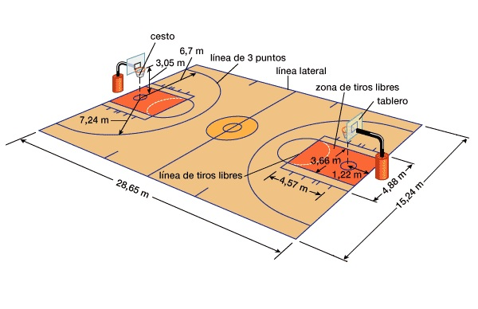
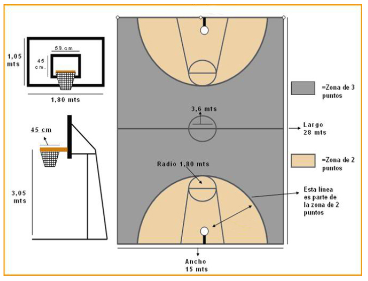

Dimensiones de la cancha
El largo de la cancha es de 28m y el ancho es de 15m.
La altura del aro se encuentra a 3.05m y tiene un diámetro de 0,45m.
Línea de tiro triple: 6,75m desde el aro.


Número de Jugadores
Cada equipo está formado por doce jugadores como máximo.
Cinco de ellos juegan y el resto son suplentes. El entrenador puede realizar cambios ilimitados aprovechando las interrupciones de juego.
Tiempo de Juego
El tiempo total es de 40 minutos, dividido a su vez en 4 tiempos (o cuartos) de 10 min c/u.
Entre el 2º y 3º cuarto es el medio tiempo o descanso (10 min.); entre el 1º y 2º cuarto y el 3º y 4º se da un breve descanso de un minuto para luego reanudar el juego.
Puntuación
Cuando el lanzamiento se realiza dentro de la zona delimitada por la línea de lanzamientos triples, ubicada a 6.75m del centro del aro vale doble.
Cuando el lanzamiento se realiza detrás de la línea de la línea de lanzamientos triples, ubicada a 6.75m del centro del aro, valen triple.
Los lanzamientos libres valen un punto cada uno.
Los jueces
Los jueces del partido son dos o tres árbitros, quienes son asistidos por una mesa de control integrada por un cronometrador, un anotador y un operador de reloj de lanzamiento. La mesa de control se encarga de los 24 segundos, la planilla de puntos, faltas individuales y colectivas.
Pelota afuera
La pelota está afuera cuando pica fuera de los límites o en la línea que la delimita, o cuando un jugador, en contacto con la pelota, pisa la línea o fuera de la cancha. También está afuera cuando toca el tablero en la parte de atrás o en el soporte.
Tiro libre
- Cuando se le comete falta a un jugador en situación de tiro (cuando está lanzando al aro o cuando comenzó a realizar la acción de doble ritmo para atacar al cesto). Si la falta se comete dentro de la línea de 6,75 y el jugador no logró embocar el lanzamiento o no pudo tirar, se le darán dos tiros libres. Si logró tirar y embocó el lanzamiento, valdrá dos puntos y se le dará un tiro libre adicional.
- Si la situación descripta anteriormente se realiza desde fuera de la línea de 6,75 se le darán tres tiros libres si no logró convertir; si lo hizo, valdrán los tres puntos y se le otorgará un tiro libre adicional.
- Cuando se cobra “técnico” por protesta fuera de lugar hacia los jueces; se le otorgan dos tiros libres al equipo contrario, que serán efectuados por un jugador designado por su propio equipo.
- Cuando se comete una falta aunque no sea en situación de tiro pero el equipo infractor lleva acumulada en la suma de las faltas cometidas por su equipo más de cuatro en el mismo período, se le asignarán dos tiros libres al jugador receptor de la falta.
- Falta antideportiva se produce cuando un jugador comete una falta personal sin opción de jugar el balón, o parando antideportivamente una situación de ataque.
- Falta descalificante. Se le pita a un jugador que realiza una acción de extremada violencia o que incumple gravemente el espíritu del juego. El equipo contrario dispondrá de dos tiros libres y saque desde el centro del campo.
Faltas técnicas más comunes
- Caminar: cuando se dan más de dos pasos con la pelota tomada sin picar; para que estos dos pasos sean válidos, el jugador debe estar en movimiento al momento de realizarlos. Cuando se deja un pie fijo y se mueve el otro (pivotear o acción de pivotear) no se cuentan como pasos cada uno de esos apoyos.
- Doble dribling: cuando luego de picar la pelota, la tomo y la vuelvo a picar; picar con ambas manos la pelota.
- Pié: cuando la pelota toca a algún jugador de rodillas para abajo o se pone el pie en forma intencional.
- Foul o falta: pegar, agarrar o cualquier contacto con el jugador contrario que tenga la pelota.
También puede cometerse falta a un jugador sin pelota, cuando hay intencional contacto físico.
- 24”: Tiempo de posesión de pelota: un equipo, luego que posee el balón tiene 24 segundos para tenerlo en posesión para retenerlo, pasarlo o buscar un lanzamiento; si el equipo no lanza antes de este tiempo, desde la mesa de control sonará una chicharra dándole la posesión de la pelota al equipo contrario.
- 8“: cuando un equipo se hace del balón en su cancha, debe obligatoriamente hacerlo pasar a la cancha de ataque (mitad de cancha) antes de los ocho segundos, mediante un pase a algún jugador que esté en cancha ofensiva o por un jugador que la lleve trasladándola hasta allí; si no lo hace, uno de los jueces sonará el silbato otorgándole el saque desde el lateral al equipo contrario.
- “Zona”: luego que la pelota pasó a la cancha de ataque u ofensiva, no podemos regresarla hacia atrás más allá de la línea media, o sea a cancha defensiva. Si esto sucede, se le otorgará el saque desde el lateral al equipo contrario.
- 3”: ningún jugador puede estar más de tres segundos en la zona restrictiva marcada en las cercanías del aro contrario, sino que debe estar en tránsito o movimiento; si esto sucede, los jueces pitarán 3” y el saque para el equipo defensor.
Todas estas faltas se realizan desde el lugar que se cometieron por parte del equipo contrario.
¿Cuántas faltas puede realizar un jugador?
5 faltas; a la 5ª debe abandonar el juego y no podrá ingresar nuevamente por el resto del partido, pudiendo si entrar un sustituto desde el banco de suplentes.